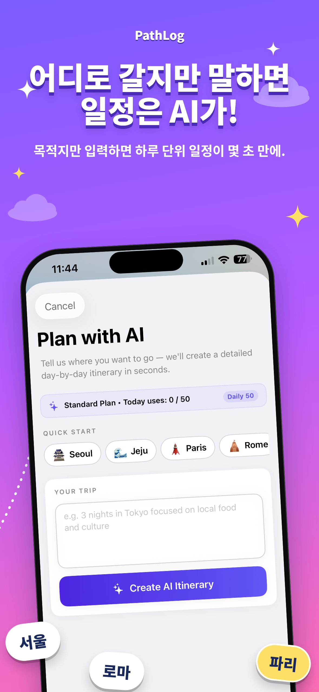
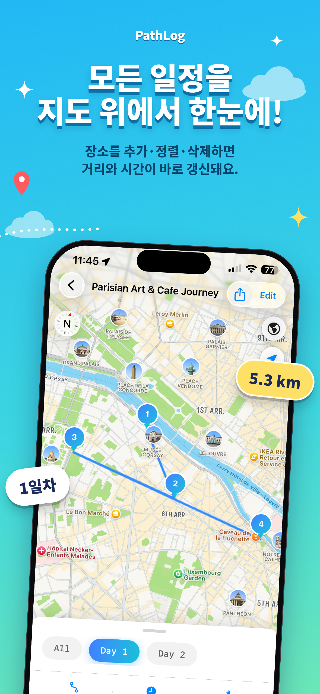

눈부신 해안으로
눈부신 해안으로01 — 여유를 즐기다햇살을
햇살을
따라서.
길을 잃어도 좋은 아름다운 해변.
첫 설렘부터 잊지 못할 마지막 순간까지. 내장 스마트 AI가 완성하는 맞춤형 일정과 나와 함께 움직이는 실시간 지도로 모험을 현실로 만들어 보세요.
가고 싶은 여행지, 걸어온 발자취, 소중한 추억을 하나의 아름다운 공간에 담아두세요.
iPhone & iPad 완벽 지원활기찬 대도시부터 고요한 해변, 굽이진 산길까지. 당신의 호기심이 향하는 곳 어디든 PathLog가 함께합니다.
눈부신 해안으로길을 잃어도 좋은 아름다운 해변.
 트레일 모험
트레일 모험나만의 야생 트레일을 찾아서.
 도시 탐색
도시 탐색골목마다 숨겨진 이야기.
사소한 일정 정리는 똑똑한 앱에 맡기고, 당신은 온전히 여행의 순간에만 집중하세요.
앱 살펴보기

도시를 누비는 여행자든, 대자연을 걷는 하이커든. PathLog가 모든 기록을 하나로 연결합니다.
 TRAVEL MODE
TRAVEL MODEAI로 일자별 여행 계획을 완성하고, 경유지를 다듬은 후 Apple 및 Google 지도로 바로 길안내를 시작하세요.
 TRAIL MODE
TRAIL MODEGoogle Earth에서 만든 트레일 KML을 가져와 지도에 선명하게 렌더링하고, GPS로 실시간 경로를 기록하세요.
세 가지 간단한 단계. 무한한 여행의 가능성.
가고 싶은 곳을 입력하면 AI가 일자별 코스를 짜주거나, 구글 어스 트레일 KML을 바로 불러옵니다.
실시간 지도에서 경유지를 살펴보고, 추가·순서변경·삭제를 통해 나만의 일정으로 완성합니다.
지도를 열고 발걸음을 옮기며, 완성한 KML을 동행자에게 공유해 각자의 PathLog 앱에서 똑같은 일정을 함께 확인하세요.
처음 구상하는 순간부터 마지막 도착지까지 부드럽고 자연스럽게 이어집니다.
원하는 여행지만 적으면 상세한 일정과 최적의 동선이 지도 위에 자동으로 펼쳐집니다.
일자별 번호 핀으로 하루 동선을 한눈에 파악하고 이동 거리와 소요 시간을 확인하세요.
한 사람이 완성한 여행이나 트레일 KML을 친구들에게 공유하면, 각자의 PathLog 앱에서 똑같은 일정과 코스를 함께 보며 여행할 수 있습니다.
Apple Maps나 Google Maps로 원터치 길안내를 열고, GPS로 트레일을 기록하세요.
다녀온 여행과 걸어온 트레일을 나만의 컬렉션으로 깔끔하게 보관하고 관리하세요.
계정 가입 없이 기기에 안전하게 로컬 저장되며 한국어, 영어, 스페인어, 프랑스어를 지원합니다.
“여행의 가장 위대한 부분은 계획 그 자체가 아니라, 계획이 가능하게 해준 모든 순간들입니다.”
떠나는 즐거움을 위해 만들어졌습니다
무료로 시작하세요. 준비가 되면 언제든 더 큰 자유를 누릴 수 있습니다.
호기심 가득한 탐험가와 이제 막 여행을 구상하는 분들을 위해.
언제나 새로운 곳을 찾아 떠나는 열정적인 여행자를 위해.
표시된 가격은 USD 기준이며 App Store 현지 통화에 따라 달라질 수 있습니다. AI 생성 경로는 여행 전 현지 사정을 확인하세요.
하나의 앱. 무한한 가능성. iPhone과 iPad에서 만나보세요.
Download on theApp Store